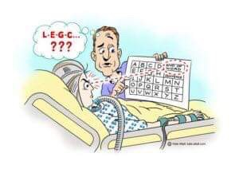

Locked-in syndrome is a rare disorder of the nervous system. People with locked-in syndrome are: Paralyzed except for the muscles that control eye movement. Conscious (aware) and can think and reason, but cannot move or speak; although they may be able to communicate with blinking eye movements.
Our approach to helping people with Locked-in syndrome communicate is through an eye tracking keyboard. Users look at specific keys on the virtual keyboard and we use eye tracking to detect which key they are looking at. The eye tracking technology is a plugin from ___. We modified it so that __.
Hi! We are team ChaiWala. We met during an internship at the Wright-Patterson Air Force Research Lab. We are a group of Computer Science majors at Ohio State University. We hope you enjoy our project!!